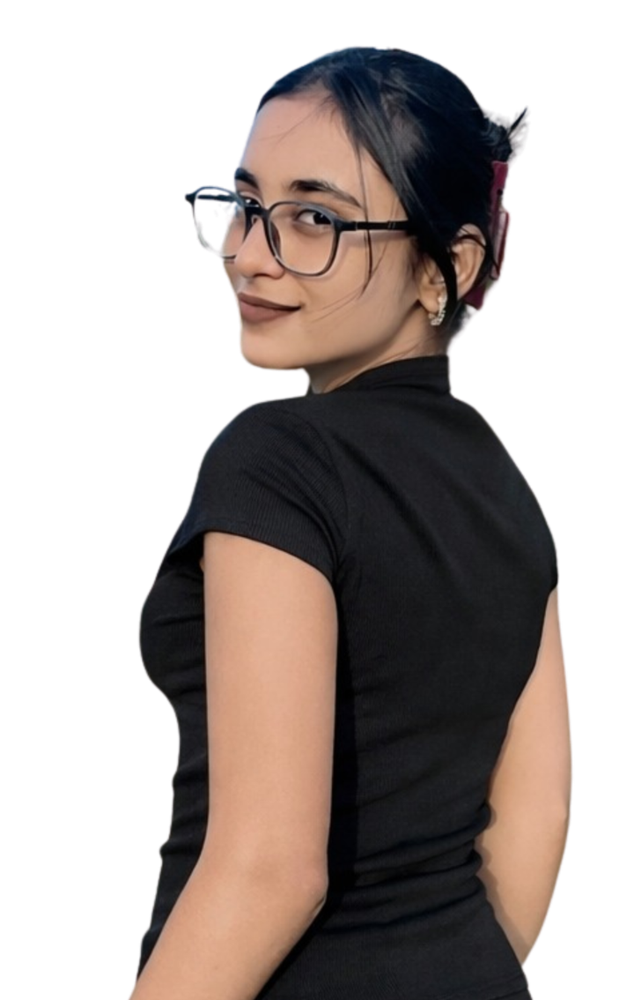
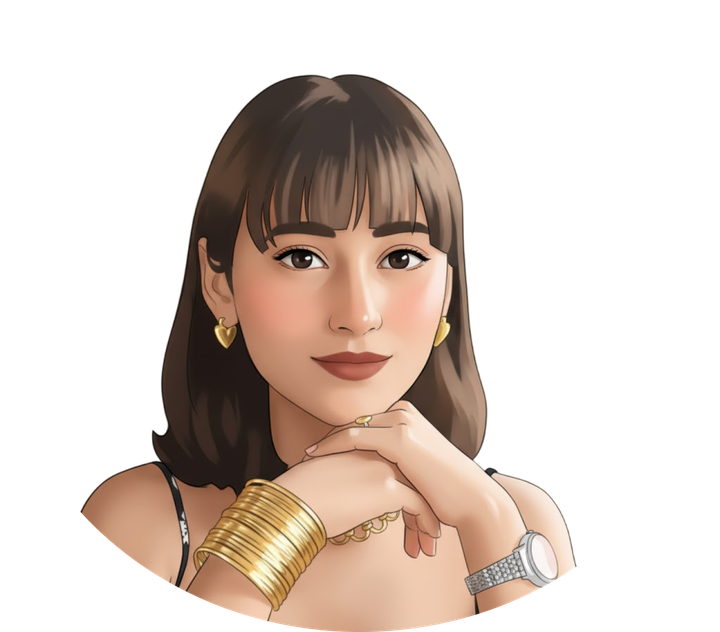

Aadhya / Textile DesignerI’m Aadhya, and I think I see the world in textures before I see it in words — a handwoven scarf on a stranger, the way light falls across a crumpled bedsheet, the accidental gradient on a chai-stained napkin. Design, for me, is really just a way of paying attention.
I believe beauty is a form of attention, and that the best designs have a little wildness stitched into them.
Textile & print development
Surface techniques & embellishment
Garment design & illustration
Creative storytelling
Illustrator · Photoshop · InDesign · Lightroom · Procreate · Canva · Figma · Penelope CAD
Print Design Intern — Aditya Birla Grasim, Jun–Jul 2026
Graphic Design Intern — Kairosity, Oct–Dec 2025
Undergraduate craft research — NIFT
National Institute of Fashion Technology
B.Des Textile Design, 2023–2027
Six projects in textile & surface design